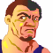
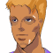
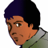

ナレーション 「独立自治権を勝ち取った宇宙移民者群セツルメントは、ようやく得た平和の中に麻痺し、やがては特権主義社会を生み出し、結局は自らが小セツルメントへの圧政を強いるようになる。時に宇宙世紀２５５年。各地で起きたセツルメント内紛争は、体制側と、反体制側に別れてその共同戦線を張り、セツルメント間による強大な戦禍を巻き起こしつつあった」
タイトル
|
− Each view − |
 ケネス 「ようやく着いた、っと。・・・メイン・バーニアを破損してる事に気付かれてたら、まず命はなかったな」
ケネス 「ようやく着いた、っと。・・・メイン・バーニアを破損してる事に気付かれてたら、まず命はなかったな」
 ボッシュ 「おぅ、生きてたか」
ボッシュ 「おぅ、生きてたか」
ケネス 「たっだいまぁ〜」
ボッシュ 「派ッ手に壊しやがったな」
ケネス 「俺の身体の心配はしてくれないワケ？」
ボッシュ 「お前の怪我はほっといても治るが、こっちの治療費は・・・」
ケネス 「俺の給料の三ヶ月分ぐらいかな？」
ボッシュ 「お前の一生の稼ぎで三回分ぐらいだ」
ケネス 「修理代はグレイゾンの連中に回しといて・・・、駄目？ そんな顔すんなよぉぅ」
ボッシュ 「わかってると思うが、資金は無尽蔵じゃない。幸いなことに働き口が見つかった。アルバイトしてもらうぞ」
ケネス 「いいぜ、アイツらとやり合うよりは命の心配をしなくていい。アルバイトの内容は？」
ボッシュ 「Ｒ商会のジンって男が、しょっ引かれてプリズンに移送されてくるらしい。次の便の護送船だ。そいつを逃がせ」
ケネス 「Ｒ商会か。まぁた、やくざな連中だコト」
ボッシュ 「そう言うな。今の所は、仲良くやらなきゃならない相手だ。金払いもイイ」
ケネス 「Ｏｋ．わかってるって。・・・悪いが、もうちょっと働いてもらうぜ、相棒」
ケネスが見上げる先に、サイファー。
 バーナバス 「よーう、ボウズ！ 背ぇ伸びたか？」
バーナバス 「よーう、ボウズ！ 背ぇ伸びたか？」
 アベル 「三ヶ月ぐらいでそんなに伸びませんよ」
アベル 「三ヶ月ぐらいでそんなに伸びませんよ」
バーナバス 「こっちのおチビちゃんは？」
 ユーニス 「か、変わってません」
ユーニス 「か、変わってません」
バーナバス 「そっちのお姉さんは？」
 イヴリン 「今さら育つ訳ないでしょ」
イヴリン 「今さら育つ訳ないでしょ」
バーナバス 「乳ぐらいなら育つだろ」
イヴリン 「コレ以上肩が凝るのも勘弁だわ。パーチたちは？」
バーナバス 「艦に残って、新作ゲームにハマッてる」
ユーニス 「ザカリアさんも？」
バーナバス 「アイツは次の任務で先に動いてる」
アベル 「いないのか、残念だな」
 イブレイ 「次の作戦までは旧交を暖めてくれたまえ。ダグラス長官と会ってくる。艦長、案内してくれ」
イブレイ 「次の作戦までは旧交を暖めてくれたまえ。ダグラス長官と会ってくる。艦長、案内してくれ」
 キャロライン 「はい」
キャロライン 「はい」
長官室。
キャロライン 「失礼します」
 ＡＪ 「先刻は助かった。礼の言葉もない」
ＡＪ 「先刻は助かった。礼の言葉もない」
イブレイ 「社交辞令なら結構だ。とっとと本題に移ろう」
ＡＪ 「承知した。キャロライン」
キャロライン 「は。失礼いたします」
イブレイ 「良いご令嬢だ。幸運の女神だな。貴様にとって」
ＡＪ 「女神に微笑んでもらうのも、男の仕事だ。手短に話せ」
イブレイ 「今回の件は貸しにしておいてやるが、それらを抜きにしても、ホセ・カーロは貴様の動向を芳しく思っていない」
ＡＪ 「知っているさ。お前もそのクチだろう。イブレイ」
イブレイ 「そうだ。なら、話は早い。グレイゾンとしては連携作戦を採るが、俺は貴様の手柄に手を貸すつもりはない」
ＡＪ 「私もそのつもりだ。お前はそうやって、一生、ホセの後ろで尻尾を振ってるがいい」
イブレイ 「せいぜい、女神様に祈っておけ」
ＡＪ 「そうするさ。・・・作戦の話に移ろう」
イブレイ 「了解した」
エレベーター
キャロライン 「ふう」
ドアが開く。
 ダニエル 「あれ？ 艦長、長官たちと作戦会議じゃないんですか？」
ダニエル 「あれ？ 艦長、長官たちと作戦会議じゃないんですか？」
キャロライン 「私が席を外している事に不服でも？」
ダニエル 「いいえ、別に」
キャロライン 「あなたも、イブレイ補佐官と同じかしら」
ダニエル 「何がです？」
キャロライン 「イブレイ補佐官は補佐官であるコトに、ブラントン中尉は副艦長であるコトに、って所かしら」
ダニエル 「ハッキリ言いますね」
キャロライン 「正直言わせていただくと、与えられた立場をわきまえるべきじゃないかしら」
ダニエル 「その、与えられた立場ってヤツが侭ならない事が気に入らないんですよ」
キャロライン 「地位もコネも実力だとはお考えになられない？」
ダニエル 「はは。美貌と色仕掛けも実力ってヤツですか」
キャロライン 「どういう意味かしら」
ダニエル 「もっぱらの噂ですよ。長官の愛人だってね」
キャロライン 「アテにならない噂ね。下らない噂を信じるようでは、品位と知性を疑われますよ」
ダニエル 「んなっ！？」
ＡＪ 「よし。プランＤで異存はないな」
イブレイ 「そう言うと思って、ザカリアとビハインドを、先に、プリズンへ潜入させてる」
ＡＪ 「本当にお前が私の補佐官だったら、私も楽が出来たのにな」
イブレイ 「俺はお前の補佐官になるつもりはないし、お前のような補佐官はいらん」
ＡＪ 「言ってくれる」
イブレイ 「女にかまけている、お前の仕事が遅いだけだ」
ＡＪ 「パーノッド派とバルバロイの政治思想犯、誰を逃がすか、その影響力まで考えてあれば、長官の座を譲るよ」
イブレイ 「あと三日あればやっていた」
 シャイロン 「向こうへ戻ってからは、どう行動しようと爆弾のスイッチは作動しない。ただ、挨拶ぐらいは教えたとおりにやってくれよ。色男君」
シャイロン 「向こうへ戻ってからは、どう行動しようと爆弾のスイッチは作動しない。ただ、挨拶ぐらいは教えたとおりにやってくれよ。色男君」
 後ろの男 「・・・。」
後ろの男 「・・・。」
シャイロン 「それとも、尻の穴がムズ痒くて、返事も出来ないのかな？ ・・・行くぞ」
歩みを進めるシャイロン。続く後ろの男。
 サーナイア 「ん？」
サーナイア 「ん？」
シャイロン 「こうしてお逢いできた事を光栄に思います。サーナイア艦長どの」
サーナイア 「貴様か。シャイロン・チェイ」
シャイロン 「此度は、地球議会軍のセグメントへの協力が議決されると聞きました」
サーナイア 「勘違いするな。貴様らセグメントを再度地球議会軍の管理下に置くための布石に過ぎん」
シャイロン 「力のある者の傘の下で、力なき者が雨をしのぐ。人の歴史ですよ」
サーナイア 「ふン・・・。ん？ 貴様は」
 ギルバート 「地球議会駐在軍ミラマン隊所属ギルバート・ゲノック中尉であります」
ギルバート 「地球議会駐在軍ミラマン隊所属ギルバート・ゲノック中尉であります」
ギルバートのＩＤタグを見つつ、
サーナイア 「偽造ではなさそうだな。戦死したと聞く、ミラマン大尉の部隊か。何故、貴様がここにいる？」
ギルバート 「バルバロイとの戦闘で敗北した結果、負傷しているところをシャイロン・チェイ一佐に助けられた次第であります」
サーナイア 「ふン。一応、例を言う。・・・中尉、貴様への辞令は？」
ギルバート 「はっ。現時点で、自分は生死不明扱いになっていると思われるため、まだ確認は致しておりません」
サーナイア 「そうか。ならば、当艦でその身柄を預かろう。いいな？」
シャイロン 「もとより、そちらへお返しする心算です」
ギルバート 「はッ」
回想。ー艦長室。
シャイロン 「君には、私の駒になってもらう」
ギルバート 「ふざけるな！ 誰が！」
シャイロン 「君にはね、利用価値がある」
ギルバート 「貴様になど！」
殴りかかるギルバート。
シャイロン 「やれやれ。手荒な真似は好きじゃないなんだが」
繰り出されるパンチのことごとくを軽くいなすシャイロン。
ギルバート 「ぐぁっ！？」
シャイロン 「だからと言って、不得手ではない」
シャイロンが掌底の一撃でギルバートを沈める。
ギルバート 「こんな・・・！ 貴様・・・！」
シャイロン 「無理強いはしたくないんだが。・・・尻の穴に爆弾でも埋め込めば、少しは大人しくなるか」
ギルバート 「そっ、そんな事で！」
ギルバート （今この場で、自分がスパイだと言わなければ！ 俺は、俺は、我が身可愛さで軍を欺いた事になる！ 今ここで！）
サーナイア 「どうした？ 怪我が癒えておらんのか」
ギルバート 「い、いえ、何でもありません」
ギルバート （俺は、あの男に・・・。俺には出来ないと、そう思われているのか）
シャイロン 「・・・まずは、手筈通り、か」

アイキャッチ「Ｇ−ＧＵＩＬＴＹ」
ユーニス 「あれが、次の目的地？」
アベル 「今向かってるプリズンってところは、どんな所なんです？」
イヴリン 「平たく言えば、刑務所よ」
ユーニス 「悪い人たちがいるの？」
イヴリン 「原則的にはね。悪い事をした人たちが捕まってるわ」
 シャヒーナ 「問題は、・・・誰にとって悪いことをしたか」
シャヒーナ 「問題は、・・・誰にとって悪いことをしたか」
イヴリン 「・・・そうね。悪い王様は、悪い王様をやっつけようとした良い人を捕まえちゃうのよ」
ユーニス 「悪い王様が・・・、ふうん」
アベル 「ユーニスには難しいかな。要するに、パーノッド派とエクレシアが捕まってるんですよね」
むっとするユーニス。
イヴリン 「そうよ。今回の任務は、彼らを解放することによって、反体制側の志気を高める事にある」
アベル 「でも、政治犯以外の人も捕まってるんですよね？ ちょっと物騒ですね」
窓の外を見るシャヒーナ。
シャヒーナ 「光？」
アベル 「どうしたの？ シャヒーナ」
ケネス 「おらぁ！ 行くぜ！ こっちが万全じゃなくても、警護用の警察マシンにやられるほどじゃねえよ！」
 ガードマン 「か、海賊がなんでこんな・・・っ！？」
ガードマン 「か、海賊がなんでこんな・・・っ！？」
ケネス 「そら！ コックピットは外してやる！ とっとと逃げな」
ガードマン 「うわわっ！ ちくしょっ！」
ケネス 「・・・と、ジンって男はいるか？ 逃がしに来たぜ」

囚人Ａ 「ジンだ！ 俺がジンだ！」

囚人Ｂ 「何を！？ 俺がジンだ！」
 囚人Ｃ 「俺だ！ 俺が本物だ！」
囚人Ｃ 「俺だ！ 俺が本物だ！」
ケネス 「あっちゃ〜」
キャロライン 「今の光は？ 戦闘のように見えたけど」
ダニエル 「ええと。あ。どうやら囚人の護送コースですね。囚人が護送船をジャックでもしたんじゃないですか？」
キャロライン 「アベル君を呼んで。念のために調べさせます」
キャロライン 「本当なら、ビハインドの役目なんだけど、中ではソードケインが一番小型だから」
アベル 「行けます。偵察だけでいいんですよね」
キャロライン 「ええ。Ｇの索敵能力は通常のマシンの倍近くあるわ。充分、相手に気付かれずに近寄れるはずよ」
アベル 「はい。アベル！ 出ます！」
キャロライン 「続いて、エキップメント射出！」
ダニエル 「エキップメント射出！」
射出される宇宙用装備。
アベル 「アタッチメント起動！ 装備します！」
囚人 「俺だって言ってるだろ！」
ケネス 「ったく、あざといと言うか、まぁ、当然と言うべきか・・・」
囚人 「俺がジンだ！」
ケネス 「んー・・・と。お。いたいた」
ジン 「お前らは違うだろ！」

囚人ＡＢＣＤ 「うおーっ」
ケネス 「タフな連中だコト・・・ん？ この反応・・・Ｇ！？」
アベル 「Ｇ！？」
アベル 「サイファーかっ！？」
ケネス 「はいはい、ジンさん以外は護送船に戻ってね。急いで急いで」
アベル 「サイファー！」
ケネス 「いよう、またまた出くわしたな。新人ちゃん」
アベル 「今日は逃がしませんよ！」
ケネス 「今日は・・・、宇宙用の装備は忘れてないのね。更にこっちのバーニアは故障中っと・・・」
アベル 「逃げない！？」
ケネス 「俺、こういうの好きじゃないんだけどさ。今、ここに、俺たちの争いとは何の関係のない囚人の方々がいらっしゃるのよね」
銃口を移送船に向けるサイファー。
囚人ＡＢＣＤ 「おいっ、マジかよ！？ やめろって！」
アベル 「なっ・・・！？ 卑怯ですよ！！ そんなのっ！」
ケネス 「格好良く死ねなんて教えるのは軍隊だけにしてくれ。俺ァ、無様でも生き延びる方を選ぶぜ」
アベル 「これじゃ、あなたのやってる事はセグメントの軍人たち以下ですよ！」
ケネス 「どうとでも言ってくれていいが、約束する。追ってこないのなら、囚人は撃たない」
ジン 「じょっ、冗談！ 口約束は良くないぞ、お前ら！」
アベル 「・・・そんな卑怯なことをして・・・、僕は忘れませんよ！」
ケネス 「まともなんだな、お前。イヴリンやパーチなら、間違いなく俺を撃ったぜ」
アベル 「行ってください！ 次は必ず撃ちますから！」
ケネス 「悪ィな。行かせてもらう」
ジン 「痛ってぇ！ もっと優しく扱えよ！ 俺はＲ商会からの客人だぞ」
ボッシュ 「どうだろうな。Ｒ商会はアンタのヘマを良いように思っちゃいないぜ」
ジン 「ぐっ」
ケネス 「かーっ！ しつこくされんのは美女だけで充分だっての」
ボッシュ 「はン。何も、バイト先でまで出くわすことはなかろうに」
ケネス 「けど。・・・ま、これで連中の魂胆が見えたぜ」
ボッシュ 「プリズンの政治犯解放、か。連中の考えそうな事だ」
ケネス 「いっちょ、潜入する価値はある、ってか」
ボッシュ 「ああ。お前の相棒さんにも、ちょっと休んでもらわなきゃならんしな。ちょうどイイ」
ケネス 「・・・って、俺が潜入すンのかよ！？」
ボッシュ 「他に誰がいる」
ケネス 「いや、そりやそうだけど。・・・あ」
ボッシュ 「ん？ ・・・ああ、なるほど」
ジン 「ん？ なんだ？」
ユーニス 「お兄ちゃーん」
アベル 「ユーニス」
ユーニス 「お疲れさまー」
アベル 「ありがと」
イヴリン 「また、ケネスに出くわしたって？」
ユーニス 「ケネス？」
アベル 「・・・はい」
イヴリン 「・・・そう」
アベル 「次は撃ちます」
イヴリン 「・・・そう」
ユーニス 「お兄ちゃん・・・」

ナレーション 「次なる戦場は、監獄。新たなる同志の解放を求め、アベルたちが行く先に待つものは？ そして、同じく潜入を果たしたケネスは、引き合うようにアベルと接触してしまう。 次回、『大脱走（前編）』 Ｇの鼓動が、今目覚める」